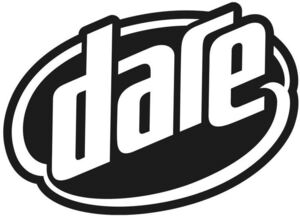

Trade Mark Journal No.2025/025 20 June 2025
WO0000001842024 (29,30,32)
Office of origin: Australia
Date of International Registration:8 January 2025
Date of designation in the UK:
8 January 2025

International priority date claimed: 18 July 2024
(Australia)
(2467391)
- Class 29
- Dairy products, other than ice cream, custard, or frozen yogurt; dairy-based products, other than ice cream, custard, or frozen yogurt; dairy substitute products, other than ice cream, custard, or frozen yogurt; milk; lactose-free milk; milk products; rice milk, oat milk, soy milk, nut milk, coconut milk; plant-based milk and dairy substitutes made from nuts, legumes, oats, coconut, rice or soy; ready to drink flavoured milk beverages; fortified milk beverages (milk predominating); dairy substitute beverages including flavoured beverages made from nut milk, oat milk, soy milk, coconut milk, and rice milk; milk-based products; dairy substitute-based products (dairy substitute predominating); milk-based beverages; dairy substitute-based beverages (dairy substitute predominating); ultra-high temperature (UHT) processed milk; yoghurts, including yoghurts made from dairy substitutes; yoghurt-based products and beverages including drinking yoghurts and dairy substitute drinking yoghurts (yoghurt predominating); dairy-based desserts; dairy substitute desserts (except ice cream or frozen yoghurt).
- Class 30
- Chocolate based products, chocolate beverages and chocolate flavoured beverages; beverages made from cocoa; coffee beverages and drinks, coffee based beverages and drinks; coffee based beverages and drinks also containing milk or dairy substitutes; Coffee [roasted, powdered, granulated, or in drinks]; coffee beans; ground coffee; coffee capsules, filled; coffee pods; coffee concentrates; coffee essences; coffee extracts; coffee flavourings (flavourings); coffee mixtures; flavoured coffee; instant coffee; preparations for making coffee based beverages; flavourings, other than essential oils, for beverages; frozen dairy products, including frozen yoghurt; ice cream, including ice cream made from dairy substitutes; iced beverages in this class.
- Class 32
- Mineral and aerated waters and other non-alcoholic drinks; drinking water; soy beverages other than milk substitutes; syrups and other preparations for making beverages; nutritionally fortified beverages being vitamin-fortified non-alcoholic beverages and nutritionally fortified water; protein-enriched beverages; flavoured water beverages.
BDD Milk Pty Ltd
Representative: WP Thompson, 138 Fetter Lane London EC4A 1BT UNITED KINGDOM